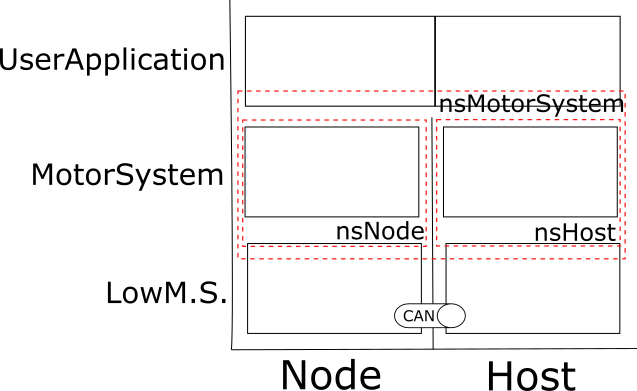

|
MotorSystem Version STM
|
MotorSystemレイヤでは、Node用の実際にモータ制御を行うプログラムとHost用のCAN通信を用いてNodeの制御を行うプログラムが提供されています。この二つはUserApplicationレイヤには同一のAPIを提供しているため、UserApplication側には、HostやNodeに関係しないプログラムが作成できます。
MotorSystemはオブジェクト指向(OOP)に基づき設計されており、システム間・レイヤ間の接続はすべてインターフェースクラスを経由して設計されています。
本プログラムは、STMからの移植を考慮して３つのレイヤに分けて設計されています。
最下層に当たるLowMotorSystemレイヤは上位のMotorSystemレイヤに対して、ハードウェアリソースを提供するために存在します。（HALなどを用いて）ペリフェラルを制御し、CANの通信を行うレイヤになります。
MotorSystemのモータを制御するメインのレイヤとなります。速度制御や状態管理などを担当します。
マニュアル操作やデバッグなどの用途で用いるプログラムのレイヤになります。
